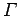
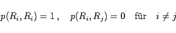
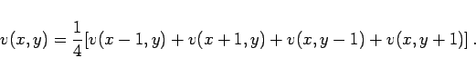

Inhalt Index DeskTop Bronstein

 Wahrscheinlichkeitsrechnung und Mathematische Statistik Mathematische Statistik Monte-Carlo-Methode Anwendungen der Monte-Carlo-Methode in der numerischen Mathematik
Wahrscheinlichkeitsrechnung und Mathematische Statistik Mathematische Statistik Monte-Carlo-Methode Anwendungen der Monte-Carlo-Methode in der numerischen Mathematik


Mit Hilfe von Irrfahrtsprozessen wird die Monte-Carlo-Methode zur genäherten Lösung von partiellen Differentialgleichungen realisiert.
Es wird die folgende Randwertaufgabe betrachtet:
Hierbei ist G ein einfach zusammenhängendes Gebiet der x,y-Ebene; mit  ist der Rand von G bezeichnet. Wie bei den Differenzenmethoden im Abschnitt Differenzenverfahren wird G mit einem quadratischen Gitter überzogen, bei dem ohne Beschränkung der Allgemeinheit die Schrittweite h=1 gewählt werden soll.
Auf diese Weise entstehen innere Gitterpunkte P(x,y) und Randpunkte . Von den Randpunkten , die auch Gitterpunkte sind, wird zunächst zur Vereinfachung angenommen, daß sie tatsächlich auf dem Rand von G liegen, d.h., es soll
gelten (s. Abbildung).
Man stellt sich vor, daß ein Teilchen von einem inneren Punkt P(x,y) aus zu einer Irrfahrt startet. Das bedeutet:
| p(P,Ri) = p((x,y),Ri) | (16.186) |
|  | (16.187) |
und
Diese Gleichung (16.190) gibt eine Näherungslösung der Differentialgleichung (16.185a) unter der Bedingung (16.186) an. Die Randbedingung (16.185b) wird dagegen berücksichtigt, indem man
| (16.190) |
setzt; denn wegen (16.189) gilt .
Zur Berechnung von v(x,y) wird (16.189) mit f(Ri) multipliziert. Nach Summation erhält man die folgende Differenzengleichung für v(x,y):
|  | (16.191) |
Werden n Irrfahrten vom inneren Punkt P(x,y) aus durchgeführt, von denen mj im Randpunkt enden, dann erhält man durch
| (16.192) |
einen Näherungswert im Punkt P(x,y) des Randwertproblems (16.185a,b).